- Error bars (and the like) are key parts of scientific visualization
- They are used to convey variability or uncertainty in data or models
- You should use them whenever there is visual room for them
- However, there is no unique “right” way to construct error bars
- We will discuss good scientific practice in align your choices about error bars with audience expectations and understanding
2023-06-07
Motivation and goal of today’s meeting
A simple example
Boyce et al. (2020) investigated how well the Maze task captures incremental syntactic disambiguation effects in comprehension.

The Maze task
Getting a word wrong ends the trial. The reaction time (RT) in choosing the critical word in the sentence is the dependent measure.
Example sentence contrast
- The uncle of the waitress who hurt herself was shocked by the accident.
vs
- The uncle of the waitress who hurt himself was shocked by the accident.
Previous work has shown a low attachment preference (i.e., the relative clause who… modifying the more recent noun) in English.
Following Witzel et al. (2012), Boyce et al. had 46 participants (after exclusions) each read one or the other versions of this sentence in the Maze task – not all participants made it through to the critical word without making a mistake, so there are 25 measurements remaining in the dataset.
Results
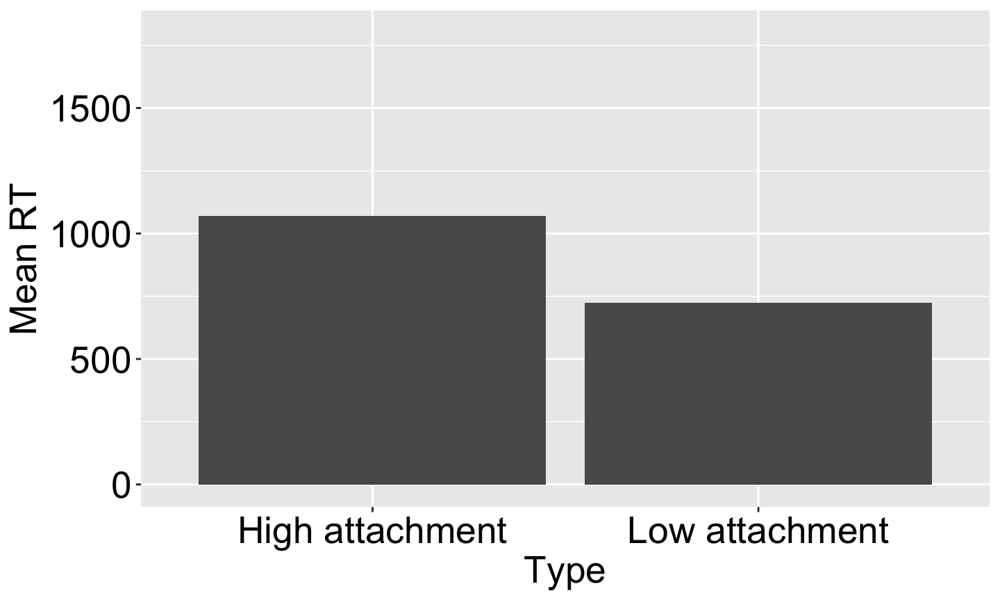
Before I go on: what do you expect error bars to convey?
Results (with error bars)
- These error bars happen to depict the standard deviation of the sample
- If you collected twice as much data, the standard deviation of the resulting sample would probably be about the same
Standard deviation vs standard error
Unbiased estimate of population standard deviation: \[s=\left[\frac{1}{N-1} \sum_{i=1}^N (x_i - \bar{x})^2\right]^{\frac{1}{2}}\]
Standard error of the mean: \[s/\sqrt{N}\]
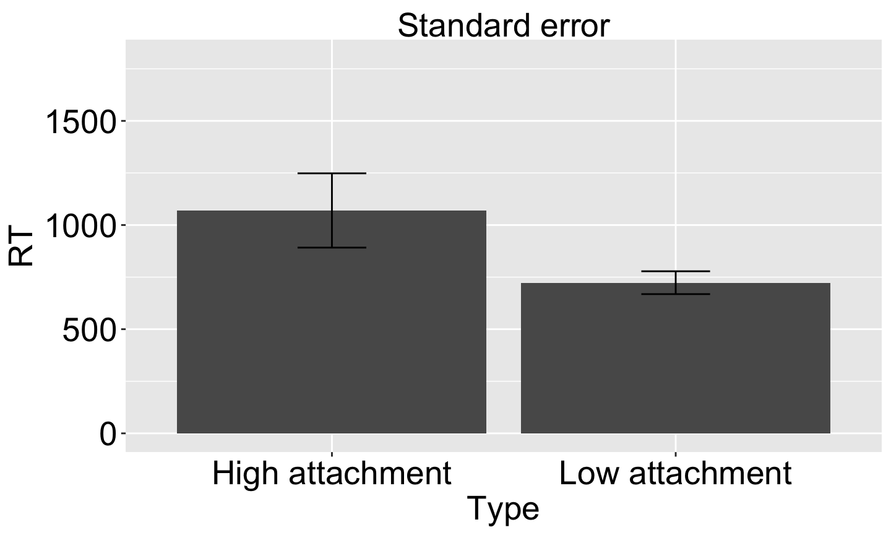
In this example, N is 14 for high attachment sentences and 11 for low attachment sentences. Collecting more data would shrink the standard error.
Conveying uncertainty about the population mean
- Standard error of the mean = standard deviation of the estimate of the population mean
- That is: if you repeatedly collected a size-N sample from a normally distributed, it’s the standard deviation of the resulting distribution of sample means
- So the standard error of the mean quantifies uncertainty in the population mean given the data at hand
- That is one thing audiences expect of confidence intervals, and one thing you can thus use them to convey.
A bit more: 95% confidence intervals
- Central Limit Theorem: the mean of independent, identically distributed (iid) random variables tends toward a normal distribution with std deviation equal to the standard error
- Mean ± 1.96 times standard error bounds a symmetric 95% (frequentist) confidence interval on the normal distribution
- With uniform priors, Bayesian confidence intervals (aka credible intervals) on the population mean would look generally the same (not shown)
 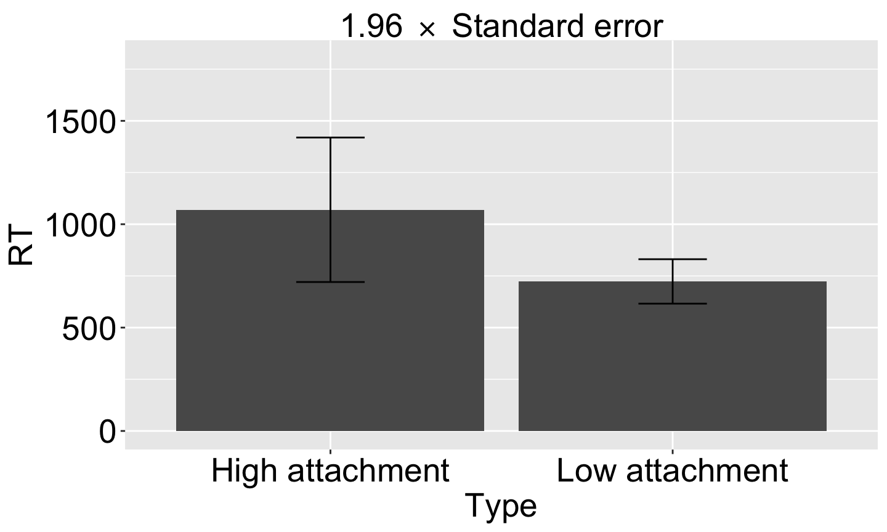
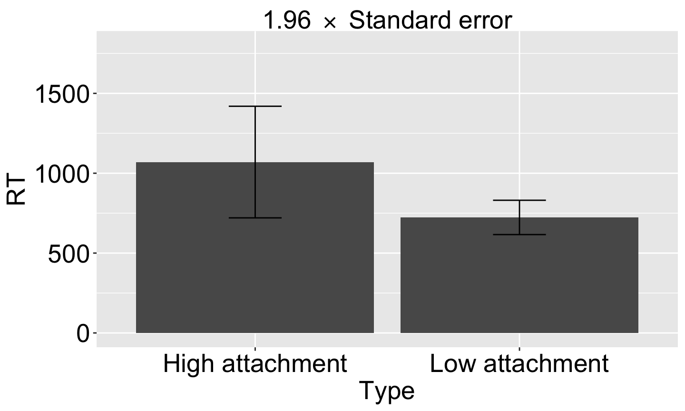
(Note that ±1.96 times isn’t exact due to finite sample size, but it’s reasonably close except when there are very fe observations)
Strength of evidence for differences in condition means?
- Common faulty inference: using error bar overlap to assess evidence for difference in condition means
- If (1-α)% confidence intervals do not overlap for two conditions, it is a sufficient condition to conclude with (1-α)% confidence that the underlying means are different
- This is most easily seen for Bayesian confidence intervals
- But it is not a necessary condition!
- Example: paired samples drawn from
\[\text{Normal}\left(\mu=\langle 0.5,0\rangle,\Sigma=\left[\begin{matrix} 1 & 0.5 \\ 0.5 & 1\end{matrix}\right]\right)\]
- Think of each 2D sample as a different subject’s response measure in two different experimental conditions
Overlapping CIs != strength of evidence for differing means
In the below, boxes indicate condition means & 95% CIs:
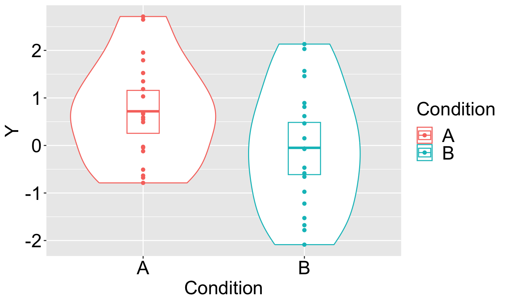
- Boxes overlap, but a paired t-test shows p=0.003! How???
Visualizing
A “spaghetti plot” is revealing: the direction of the A/B contrast is highly consistent within replicate!
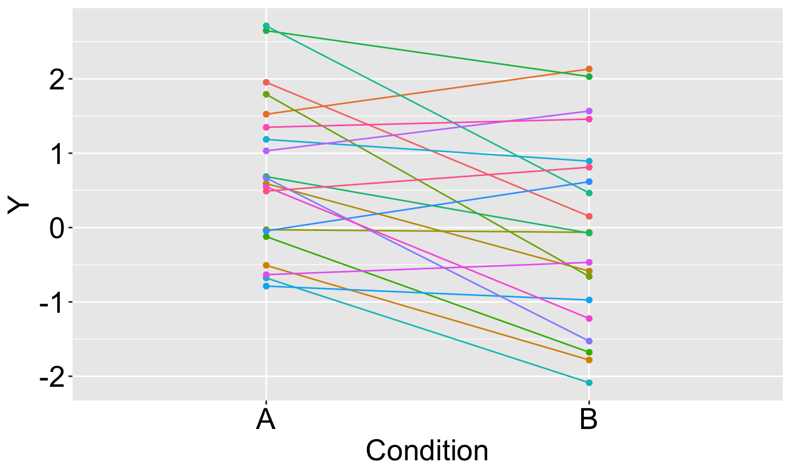
These within-replicate relationships are taken into account by the paired t-test but not the error bars as I chose to draw them
If the data were not paired…
Here are the exact same data with the pairings scrambled:
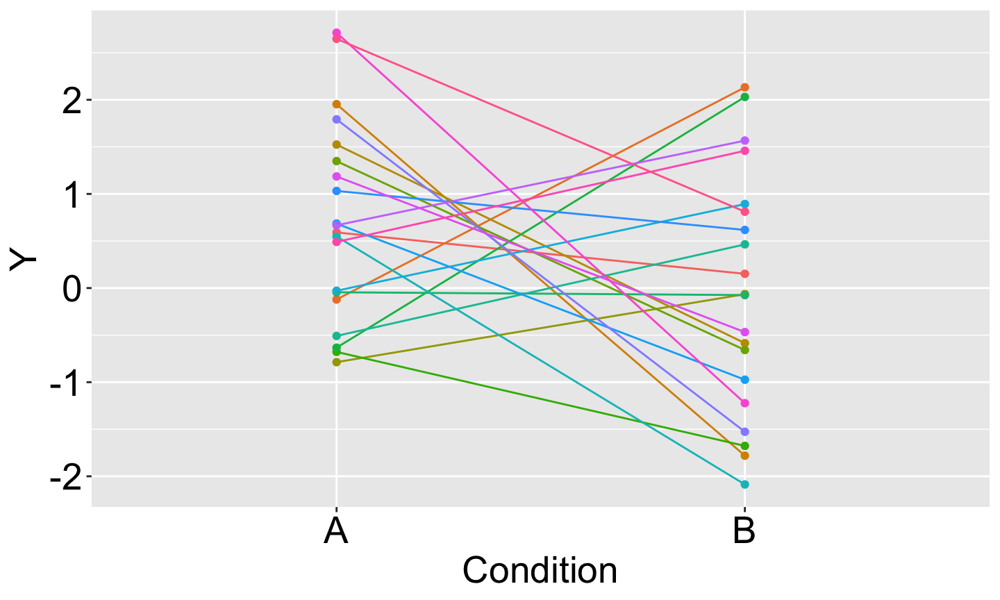
- A paired t-test on these data shows p=0.09
- The error bars I drew convey uncertainty in the condition means but not the coupling of that uncertainty across conditions
“Within-group” confidence intervals
- Loftus & Masson (1994) argued that “because between-subject variance typically plays no role in statistical analyses of within-subject designs, it can legitimately be ignored” in constructing confidence intervals
- Their suggested confidence interval is equivalent to the following procedure:
- subtract out each subject’s mean from that subject’s data in all conditions
- compute confidence interval widths for each condition
- attach those confidence intervals to the original condition means
- Result:
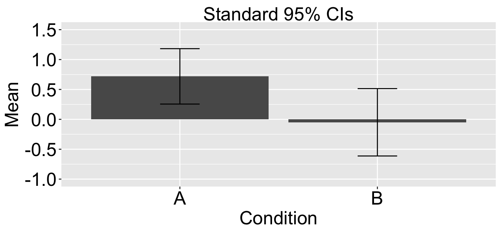
- Bonus result: the confidence interval on the difference between sample means is
sqrt(2)times the size of this Loftus & Masson confidence interval
More issues with repeated measures
Back to Boyce et al (2020): actually there were 24 items (sentence pairs), each read in one of the two conditions by each of the 46 participants, so our observations have repeated measures within both subjects and items - a sample of the dataset:
## Subject Item Type word rt ## 1 2 1 Low attachment herself 955 ## 2 2 24 High attachment herself 652 ## 3 2 4 High attachment himself 633 ## 4 4 4 Low attachment herself 610 ## 5 4 24 Low attachment himself 1077 ## 6 4 1 High attachment himself 716 ## 7 14 1 High attachment himself 736 ## 8 14 4 Low attachment herself 687 ## 9 14 24 Low attachment himself 704
A couple more example items – notice the potential for item effects:
- The sister of the salesman who made a fool of herself/himself at work was very angry.
- The nephew of the queen who praised himself/herself all the time was very rude.
This means that our observations are not iid and therefore naive standard errors and confidence intervals would be invalid!
By-group data aggregation
dat_by_subject <- dat_subset %>% group_by(Subject,Type) %>% summarize(rt=mean(rt))
## Subject Type rt ## 1 2 High attachment 642.5 ## 2 2 Low attachment 955.0 ## 3 4 High attachment 716.0 ## 4 4 Low attachment 843.5 ## 5 14 High attachment 736.0 ## 6 14 Low attachment 695.5
summary_stats <- dat_by_subject %>% group_by(Type) %>% summarize(RT=mean(rt),SE=se(rt))
## Type RT SE ## 1 High attachment 698.1667 28.42583 ## 2 Low attachment 831.3333 75.15780
By-group data aggregation
Raw means & standard errors:
## Type RT SE ## 1 High attachment 935.0564 26.68217 ## 2 Low attachment 828.7740 18.47057
By subjects:
## Type RT SE ## 1 High attachment 942.9155 38.48789 ## 2 Low attachment 867.4657 51.43884
By items:
## Type RT SE ## 1 High attachment 931.4581 31.70127 ## 2 Low attachment 832.0440 23.46972
By-group data aggregation
 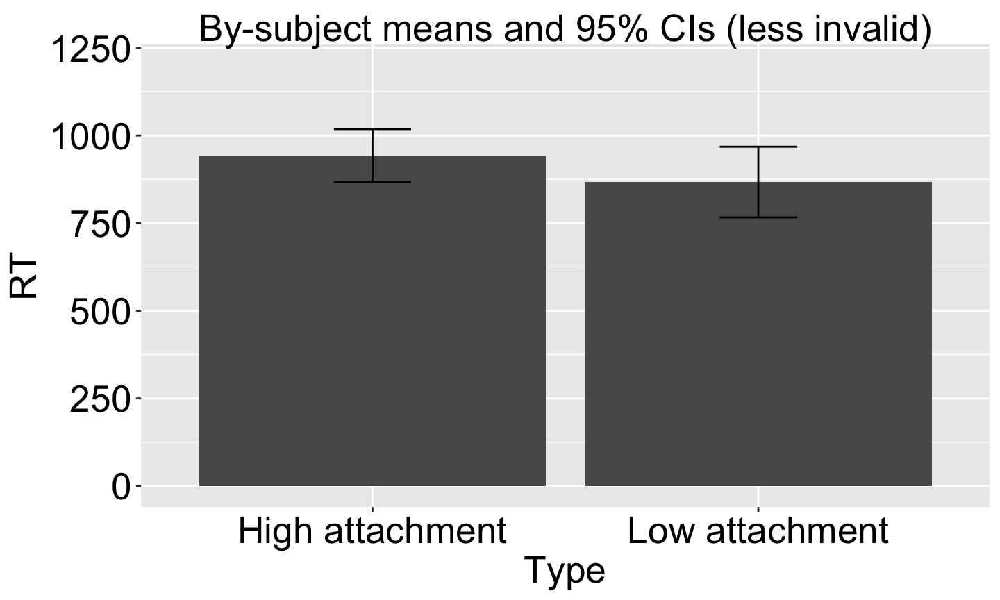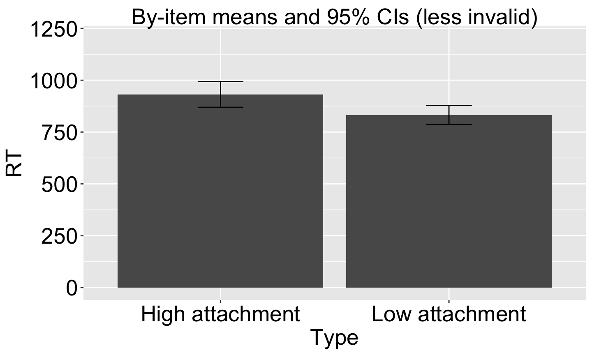
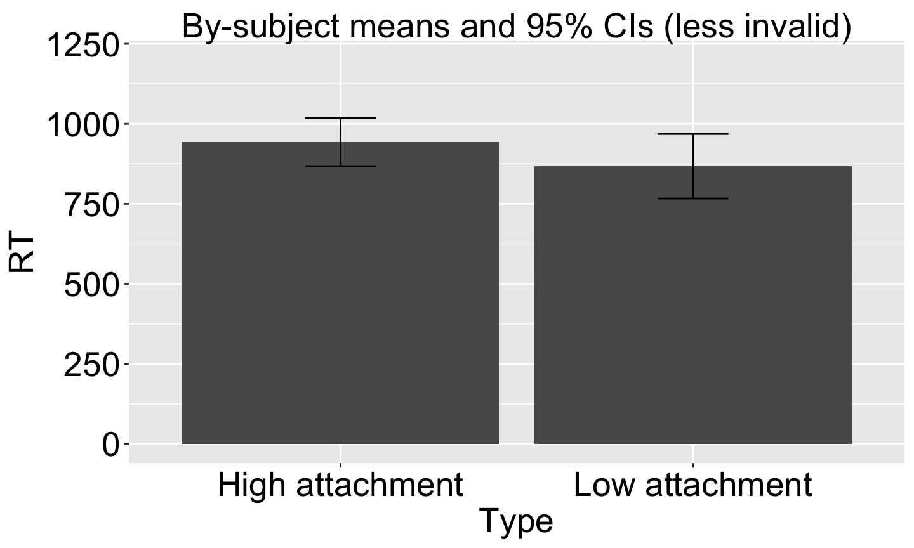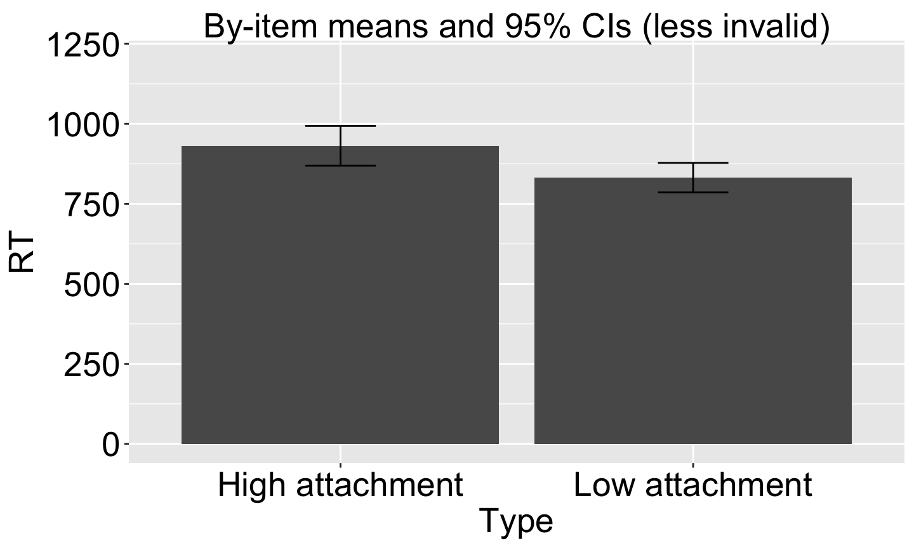
Mixed-effects models can help!
Dummy-coding conditions (two 0/1 vars) gives uncertainty about condition means:
## Linear mixed model fit by maximum likelihood ['lmerMod']
## Formula: rt ~ 0 + Type + (0 + Type | subject) + (0 + Type | item.factor)
## Data: dat
##
## AIC BIC logLik deviance df.resid
## 9507.5 9547.7 -4744.8 9489.5 633
##
## Scaled residuals:
## Min 1Q Median 3Q Max
## -1.4601 -0.5370 -0.2124 0.1697 6.2706
##
## Random effects:
## Groups Name Variance Std.Dev. Corr
## subject TypeHigh attachment 35496.1 188.40
## TypeLow attachment 20456.4 143.03 0.99
## item.factor TypeHigh attachment 12425.3 111.47
## TypeLow attachment 613.2 24.76 1.00
## Residual 137203.5 370.41
## Number of obs: 642, groups: subject, 40; item.factor, 24
##
## Fixed effects:
## Estimate Std. Error t value
## TypeHigh attachment 942.66 44.34 21.26
## TypeLow attachment 838.77 31.92 26.28
##
## Correlation of Fixed Effects:
## TypHga
## TypLwattchm 0.609
## optimizer (nloptwrap) convergence code: 0 (OK)
## boundary (singular) fit: see help('isSingular')
Mixed-effects models can help!
Sum-coding condition (±1) gives uncertainty about condition differences:
## Linear mixed model fit by maximum likelihood ['lmerMod']
## Formula: rt ~ TypeSum + (TypeSum | subject) + (TypeSum | item.factor)
## Data: dat
##
## AIC BIC logLik deviance df.resid
## 9507.5 9547.7 -4744.8 9489.5 633
##
## Scaled residuals:
## Min 1Q Median 3Q Max
## -1.4601 -0.5370 -0.2124 0.1697 6.2706
##
## Random effects:
## Groups Name Variance Std.Dev. Corr
## subject (Intercept) 27317.8 165.28
## TypeSum 660.4 25.70 0.89
## item.factor (Intercept) 4639.4 68.11
## TypeSum 1879.3 43.35 1.00
## Residual 137203.4 370.41
## Number of obs: 642, groups: subject, 40; item.factor, 24
##
## Fixed effects:
## Estimate Std. Error t value
## (Intercept) 890.72 34.32 25.956
## TypeSum 51.94 17.75 2.926
##
## Correlation of Fixed Effects:
## (Intr)
## TypeSum 0.389
## optimizer (nloptwrap) convergence code: 0 (OK)
## boundary (singular) fit: see help('isSingular')
Takeaways
- Error bars are a visualization tool that scientific audiences are familiar with – use them!
- However, there are many ways to use them.
- Think carefully about what you want them to convey; and
- Be clear about how you are using them.
- For even the simplest data, your choices about error bars imply an implicit assumed generative model and a focus on particular quantities in that model
- Sometimes, fitting a model is the best way to accurately quantify the uncertainty you want to convey.